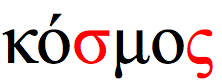

Updated Sun 21 Oct 2014 • tags greek, scriptnotes
This page provides information about the characteristics of the Greek script. It is not intended to be exhaustively scientific – merely to give a basic idea of the essential features of the script.
Όταν ο κόσμος θέλει να επικοινωνήσει, μιλά Unicode. Εγγραφείτε τώρα στη Δέκατη Διεθνή Διάσκεψη για το Unicode, η οποία θα πραγματοποιηθεί 10-12 Μαρτίου 1997 στο Mainz της Γερμανίας. Η διάσκεψη θα φέρει κοντά ειδικούς από όλους τους τομείς Internet και Unicode, διεθνοποίησης και προσαρμογής λογισμικού, εφαρμογών του Unicode σε λειτουργικά συστήματα και εφαρμογές, γραμματοσειρές, διάρθρωση κειμένου και πολυγλωσσική εργασία σε υπολογιστές.
| Script name | Greek |
|---|---|
| Script type | alphabet |
| Number of characters | 368 |
| Case distinction | yes |
| Combining characters | 0 |
| Multiple combining characters | no |
| Context-based positioning | no |
| Contextual shaping | no |
| Cursive script | no |
| Many more glyphs than characters? | no |
| Text direction | ltr |
| Baseline | mid |
| Space is word separator | yes |
| Wraps at | word |
| Justification | word |
| Native digits? | no |
Click on the orange text in the features list (right column) to see examples and notes. Click on highlighted text in the Sample section to see the characters. Click on the vertical blue bar, bottom right, to change font settings.
The letter sigma in Greek does vary in shape, depending on whether it appears in the middle or at the end of a word.

However, this shaping is not done by rendering rules. There are two separate code points in Unicode for U+03C3 GREEK SMALL LETTER SIGMA and U+03C2 GREEK SMALL LETTER FINAL SIGMA, and separate keys on the standard keyboard.
Click on the highlighted text in the Sample section to see the characters that make up this example.
Justification is done, principally, by adjusting the space between words. (High-end systems may also adjust inter-character spacing slightly if inter-word doesn't resolve the issue, or to improve aesthetics.)
You can justify the text in the Sample section using this control.
The Greek script characters in Unicode 7.0 are spread across 2 blocks. These figures may include some Coptic characters:
The following is an incomplete list of languages and the number of characters they use, per version 26 of CLDR's lists of characters (exemplarCharacters).